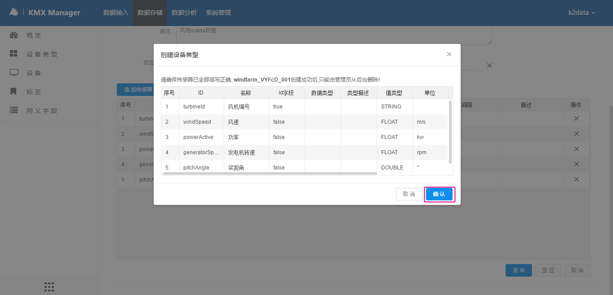
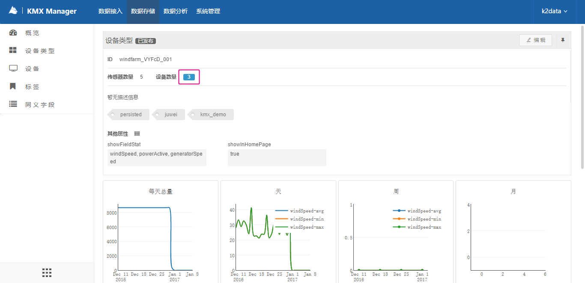
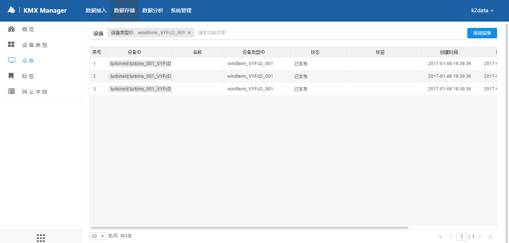

单机添加设备类型按钮，跳转到新建设备类型页面
输入id、名称等信息，单击“添加传感器”以添加传感器信息。

在弹出框中根据元数据信息文件，输入传感器信息，并单击“确定”。

单击“发布”按钮

在弹出的窗口中确认输入信息以及提示消息。单击“确认”按钮后，设备类型将被创建，并发布。

等待上一步骤被创建的设备类型状态变为“已发布”后，单击“设备”菜单。

在设备列表上方，单击“添加设备”按钮

在新建设备页面，根据元数据信息文件，首先选择设备类型，然后录入设备信息信息如下，单击创建按钮，创建一个设备。

确认警告消息，设备创建并发布成功。

按照同样的方法创建其它设备。
查看步骤1中建立的设备类型详情页，看到下属设备有3个，单击数字，进入该设备类型所有设备页面

可以看到步骤2中建立的三个设备列表
